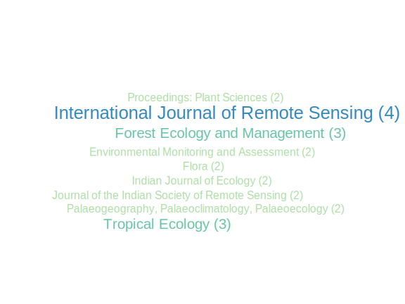
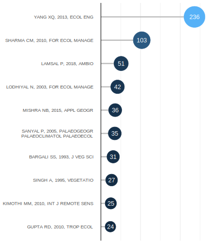
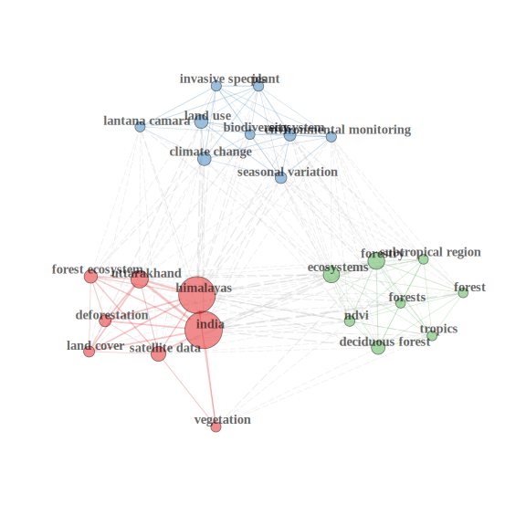
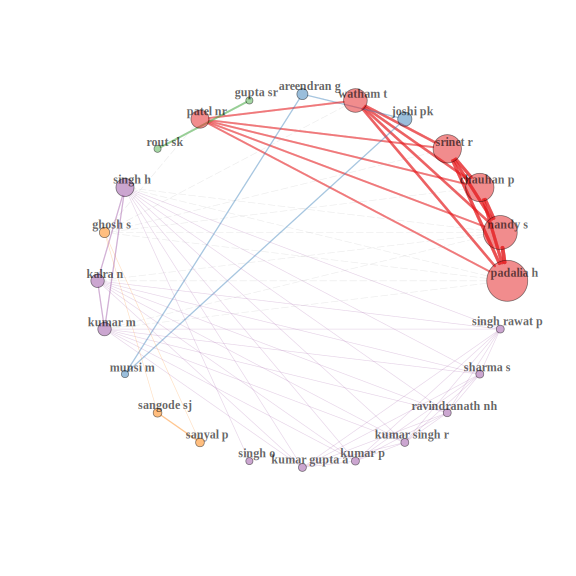
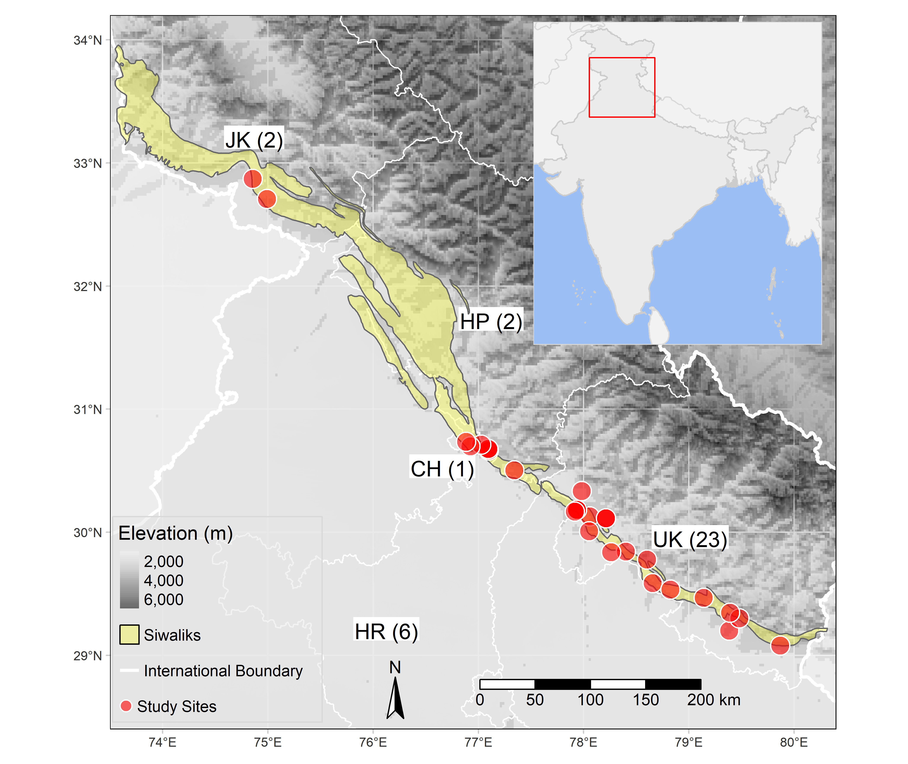
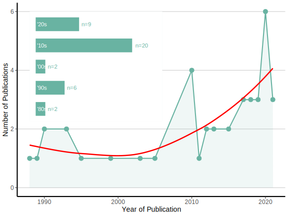
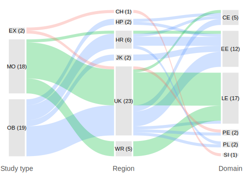

Plant ecology in Indian Siwalik range: a systematic map and its bibliometric analysis
We systematically identified the patterns and trends in plant ecological research of the Siwaliks
![]()
Note
This is the original draft, which may differ from published manuscript. Please refer to https://doi.org/10.1007/s42965-022-00229-x
Abstract
The Himalayan foothills or the Siwaliks have been considered as one of the most fragile ecosystems of India. The underlying cause of degradation includes natural settings (geological formation and climate change) and human-mediated pressures (sandstone mining, urbanisation and developmental activities). Since the Siwaliks is associated with the livelihood of about 20 million people, it becomes imperative to respond appropriately for sustaining this ecologically fragile region. Ecological principles have great potential to develop sustainable practices for the conservation and management of natural resources. These principles offer nature-based solutions to sustain the ecologically sensitive and degraded ecosystems such as the ‘Siwaliks’. However, there is a need for concerted research to develop data-driven decisions for effective management. Therefore, a systematic analysis was conducted to assess the current patterns and knowledge gaps about plant ecological studies in the Indian Siwalik region. This article analysed the available peer-reviewed literature using established guidelines and bibliometric analyses. We found an increasing trend in the scientific output, and most studies were concentrated in the Siwalik region belonging to the Indian state of Uttarakhand. Although studies have been conducted on plant ecology, landscape ecology and ecosystem ecology have been disproportionately focused. Our findings suggest a growing interest in the plant ecology of the region; however, these studies seem relatively small compared to the complexity and diversity of this ecosystem structural and functional attributes. Further, with advances in computer application and remote sensing satellite data availability, we observed a shift towards ecological modelling studies, though experimental evidence also needs to be addressed.
Keywords: Himalayan foothills, Northwest Himalaya, Shivalik, Sivalik, Shiwalik, Uttarakhand
Introduction
The southernmost foothills of the Himalayas with an average elevation of 900–1200 m are known as Siwaliks (Wadia 1944) or other spelling variants (A. Kumar, Patil, and Singh 2020). This younger range of the Himalayas is characterised by rich fossil remains of vertebrates, plants, and molluscs (Dhital 2015). Geographically, these hills run parallel to the Himalayas from the Potwar Plateau of Pakistan to Brahmaputra valley in India (Wadia 1944; Dhital 2015). It is well developed in India’s northwest region and covers a 3.33 Mha area across six Indian states and a union territory (Yadav et al. 2015). The Siwalik landscape supports a rich diversity of flora (Rout and Gupta 1989; A. Singh, Reddy, and Singh 1995; Rawat and Bhainsora 1999) and fauna (Sivakumar, Sathyakumar, and Rawat 2010). Apart from biological and geological importance, the present region also harbours culturally diverse human population whose livelihood depends on the region’s natural resources. However, the Siwaliks have been degrading due to inevitable pressure from human activities (e.g., mining, industrialisation and more urban expansion) and climate change (Tewari, Verma, and Gadow 2017). These human-mediated disturbances and geological settings make the region fragile, leading to frequent landslides and soil erosion. Soil erosion has remained a persistent problem of the region despite numerous efforts for management (Scott and Walter 1993; Semwal, Khobragade, and Nainwal 2017). Considering the unprecedented ecological degradation, Indian Siwalik has been once proposed to be declared as a biosphere reserve (Press Trust of India 2010). Such initiatives to sustain and preserve threatened landscapes can be supported by knowledge derived from ecological studies.
Plant ecology focuses on the interactions of plants (primarily terrestrial plants) with their environments over a range of spatio-temporal scales (Gurevitch, Scheiner, and Fox 2002). The interests and focus of plant ecologists varied over time from community ecology, population ecology, physiological ecology, ecosystem ecology, species interactions, landscape ecology to macroecology (Gurevitch, Scheiner, and Fox 2002). Despite substantial growth and development of the field, many mysteries of nature are neither well-known nor fully understood (Schulze et al. 2019). For instance, human activities and climate change have been rapidly altering the interactions of organisms with their environment; yet their consequences are not fully known (Schulze et al. 2019). These alterations in nature can considerably threaten the balance of organisms and their environment. Thus, studying ecological interactions becomes important to sustainably manage natural resources and ensure continuity of life on the earth.
Research synthesis is crucial to integrate past findings and develop a future roadmap for research (Koricheva and Gurevitch 2013). Traditional narrative synthesis and vote count approaches of literature reviews often suffer from bias and lack replicability (Koricheva and Gurevitch 2013). Modern research synthesis employs a well-defined methodology for literature review to answer specific questions to overcome these constraints. Although systematic reviews have been frequently used in medical sciences, the same is also being applied in ecology and evolution. Systematic reviews aim to answer precise questions, whereas a systematic map aims to describe the field (James, Randall, and Haddaway 2016; CEE 2018). On the other hand, bibliometrics measure scientific articles’ influence and relationships based on statistical methods (Aria and Cuccurullo 2017). Therefore, bibliometrics has been contemporarily included in review articles (Xie et al. 2020; Rodríguez-Soler, Uribe-Toril, and De Pablo Valenciano 2020; Rishikesh Singh et al. 2021; Verma, Kumari, and Raghubanshi 2021). Recently, a new framework of research synthesis called “research weaving” combines the systematic map and bibliometric approaches (Nakagawa et al. 2019). Thus, the research weaving approach describes and summarises the evidence and visualises the influence and relationships among the evidence (Nakagawa et al. 2019).
Considering the importance of plant ecology and ecological problems of the Indian Siwaliks, this review aims to describe the focus of plant ecological studies by analysing the current evidence from the bibliometric analysis. Further, we aim to identify the patterns and gaps in the current knowledge, guiding future investigations. The taxonomic scope of this review is any plant species in the Siwaliks of northwest India. The Siwalik region has been spatially defined according to the Geological Survey of India (https://bhukosh.gsi.gov.in/Bhukosh/MapViewer.aspx). However, this study will not focus on agroecological aspects; therefore, studies concentrating on agricultural systems will be beyond the scope of this review. Overall, we aim to answer the following questions: (1) What are the focus areas of plant ecological studies conducted in the Indian Siwaliks? (2) What is the geographical and temporal distribution of the studies? (3) What are the research gaps and opportunities for future investigations?
Methodology
We adopted the guidelines and recommendations established by Collaboration for Environmental Evidence (CEE) for evidence synthesis in environmental management (CEE 2018). These recommendations are designed to improve the transparency and reproducibility of reviews in environmental contexts (CEE 2018; Grames and Elphick 2020). We departed from recommended practices as we neither consulted stakeholders nor registered a protocol. A review team comprising of individuals with relevant skills and knowledge (subject and methodological) was framed. The roles and responsibilities of each participant have been defined during the initial project development. Every weekend, we organised meetings and discussions to develop the protocol, search strategy, screening, data extraction, analyses, and writing. The selection of appropriate studies for the present review involved three phases: searching, screening, and inclusion (Figure 1).
Literature database
Scopus (https://scopus.com/) and Web of Science Core Collection (https://webofknowledge.com/) are the most reliable databases for retrieval of high-quality peer-reviewed scientific literature in the fields of science and technology. Although the Web of Science Core Collection consists of seven indices: (i) Science Citation Index Expanded (SCIE), (ii) Social Sciences Citation Index (SSCI), (iii) Arts & Humanities Citation Index (AHCI), (iv) Conference Proceedings Citation Index (CPCI), (v) Book Citation Index (BCI), (vi) Emerging Sources Citation Index (ESCI), and (vii) Current Chemical Reactions and Index Chemicus (https://clarivate.com/webofsciencegroup/solutions/web-of-science-core-collection/), our institution provided us access to SCIE, SSCI and AHCI for the timespan 1989-present. Both databases allow to export bibliographic meta-data offer great accuracy and reproducibility of literature search. However, access to these databases required a subscription through payment of large money. Although both databases emerged in 2004, Scopus offers relatively larger coverage of scientific literature whereas Web of Science provides offers coverage from early 1900.
On the other hand, Google Scholar (https://scholar.google.com/) is freely available and has most comprehensive coverage as it offers retrieval of most obscure information. Although it also provides access to full text articles, it is not a bibliographic database. Its content is dynamic and has compromised accuracy. Further, it lacks several functionalities in literature search like subject filtering and tagging. Considering these limitations, we limited our literature search to two bibliographic databases of peer-reviewed literature (Web of Science Core Collection and Scopus).
Search strings
We identified the terms that are frequently applied to the region using a preliminary literature search and discussion with review team members (Table 1).
| group1 | group2 | group3 | group4 |
|---|---|---|---|
| shivalik | himalayan foothills | jammu hills | dudhwa range |
| sivalik | outer himalayas | kangra hills | dundwa range |
| shiwalik | sub himalayas | morni hills | |
| siwalik | mohand hills |
Further, we searched for various spelling variants of terms applied to the region (A. Kumar, Patil, and Singh 2020). Using a combination of these terms with boolean operators, we developed the following common search string for Web of Science and Scopus.
(shivalik OR sivalik OR shiwalik OR siwalik) OR (himalaya* AND (foothill* OR outer OR sub)) OR (hill* AND (jammu OR kangra OR morni OR mohand)) OR (range* AND (dudhwa OR dundwa))
Literature search
Scopus: We have queried the above defined search string to the “Article title, Abstract, Keywords” in “Documents” using the default options for “Limit” (Date range (inclusive): Published from “All years” to “Present”; Document type: “ALL”). This query returned a total of 4,102 document results on 03 April 2021. Then, we have filtered the results by limiting subject to “Agricultural and Biological Sciences” and “Environmental Science” subject areas, which yielded a total of 1,875 documents. All these documents were selected by choosing “Select All” option and then exported all information by selecting “Citation information”, “Bibliographical information”, “Abstract & keywords”, “Funding details” and “Other information” in the BibTex format.
Web of Science Core Collection: The same keyword combination was queried in the “Topic” field of Web of Science by selecting the database “Web of Science Core Collection”. Default settings (Web of Science Core Collection: Citation Indexes - Science Citation Index Expanded (SCI-EXPANDED) –1989-present, Social Sciences Citation Index (SSCI) –1989-present, and Arts & Humanities Citation Index (A&HCI) –1989-present; Auto-suggest publication names: On; and Default Number of Search Fields to Display: 1 field (Topic)) were used under the more settings option. This yielded us 2,978 results on 03 April 2021. Then the results were refined by selecting following Web of Science categories: ENVIRONMENTAL SCIENCES, PLANT SCIENCES, PALEONTOLOGY, ECOLOGY, BIOLOGY, REMOTE SENSING, SOIL SCIENCE, BIODIVERSITY CONSERVATION, FORESTRY, EVOLUTIONARY BIOLOGY, and ENVIRONMENTAL STUDIES. This yielded a total of 1,013 results. Then the “Show” option was changed from “10 per page” (Default) to “50 per page”. Next, all entries on a page were first selected using the “Select Page” option and then added to “Marked List” using the “Add to Marked List” button. This was repeated for all the 21 pages and thus all the 1,103 entries were added to the “Marked List”. Since Web of Science allows export of 500 records at time, we have first selected the first 500 records by defining the record range “Records: 1 to 500” under the “Step 1: Select records.” option. Then we have selected all the fields using the “Select All” option under “Step 2: Select content. Select from the fields below:” option. Next, we have exported the records in BibTex format using the “Export” option under the “Step 3: Select destination.” And then choosing the “BibTex” option under the “Other File Formats”. The same process was repeated for records 501 to 1,000 and 1,001 to 1,013.
Article screening
Article screening was implemented in the R programming environment (R Core Team 2020) using the package revtools version 0.4.1 (Westgate 2019). This phase included de-duplication, title screening, abstract screening, and full-text screening. We adhered to the previously proposed eligibility criteria for the article screening phase (Table 2).
| Criteria |
|---|
| Inclusion |
| articles falling in general scope of plant ecology |
| study sites or their part situated within the boundary of Siwaliks |
| studies involving plants as one of the component |
| studies related to plant distributions and their interactions with environment |
| studies involving ecosystem processes such as nutrient cycling, carbon sequestration, and biomass production |
| studies referring to palaeoecological studies such as fossil distribution and past vegetation |
| Exclusion |
| studies concerning animals, fungi, microbes or any organism other than plants |
| studies focusing agroecosystems and agricultural practices |
| studies related to ethnobotanical or traditional uses of plants |
| studies evaluating phytochemicals or biological activities |
| studies focusing cytology, genetics or molecular biology of plants |
| studies reporting discovery of new species |
De-duplication: Database may have erroneous duplications or due to automated information extraction systems. Thus, the documents can be largely duplicated within and across literature databases. These duplicates might waste the energy and time of the reviewers apart from erroneous results of reviews. Therefore, removal of duplicates is necessary. Several procedures and software are available for automated de-duplication of literature. Here, we have first de-duplicated the documents based on doi (digital object identifier) of each articles. Then, we have de-duplicated by matching title of each article. However, the upper- or lower case and punctuations can interfere with title matching. Therefore, we converted titles to lower case and removed punctuations before matching. Thus, after de-duplication we are left with 2,171 (unique doi = 2,366, unique doi + unique title = 2,171) articles out of total 2,888 articles (Figure 1). After this, we have performed manual screening of duplicates, if remained any.
Title screening: After de-duplication of articles, we performed article screening based on their titles. We have hidden every other information during title screening to avoid any potential bias. We assigned one of three labels to each article (i) selected, (ii) excluded, or (iii) unknown. We excluded 1,796 articles based on title screen and remaining 375 articles were selected for abstract screening out of which 158 articles were assigned “selected” and 217 articles were assigned “unknown” during the title screening. Next, we removed the articles assigned as “excluded” and screened for abstracts.
Abstract screening: Our abstract screening resulted in exclusion of 264 articles and we are left with only 111 articles. Then we filtered these 111 articles and saved as the included articles (Figure 1).
Full-text searching: Then we searched for full text for every article from publisher’s website, Google Scholar, Research Gate and institutional repositories. We were not able to retrieve full text of following 11 articles. We excluded these 11 articles and screened full text of articles.
Devi, B., Bhardwaj, D. R., Panwar, P., Pal, S., Gupta, N. K., & Thakur, C. L. (2013). Long term effects of natural and plantation forests on carbon sequestration and soil properties in mid-hill sub-humid condition of Himachal Pradesh, India. Range Management and Agroforestry, 34, 19–25.
Mehta, S., & Singh, Y. (1994). Spatio-temporal changes in the natural hilly ecosystem: a case study of the Chandigarh Siwalik Hills. Transactions - Institute of Indian Geographers, 16, 135–146.
Pandey, R. K., Bindroo, B. B., Dhar, A., & Khan, M. A. (2010). Oak regeneration in Sub-Himalayan India. Indian Silk, 1, 19–21.
Panwar, P., Pal, S., Bhatt, V. K., & Prasad, R. (2014). Land use and canopy positions affect organic carbon pools and fertility of soils in lower Himalayan region, India. Agrochimica, 58, 51–62.
Pokhriyal, T. C., Chaukiyal, S. P., & Singh, K. C. H. (1996). Nitrogen fixation and nodulation behaviour in relation to seasonal changes in six multipurpose tree species. Indian Forester, 122, 718–726.
Purohit, S., Aggarwal, S. P., & Patel, N. R. (2021). Estimation of forest aboveground biomass using combination of Landsat 8 and Sentinel-1A data with random forest regression algorithm in Himalayan Foothills. Tropical Ecology, 62, 288–300. https://doi.org/10.1007/s42965-021-00140-x
Rajwar, G. S. (1991). Advances in Himalayan Ecology. Today & Tomorrow’s Printers and Publishers, New Delhi.
Rajwar, G. S. (1993). Garhwal Himalaya: Ecology and Environment. Ashish Publishing House, New Delhi.
Ram, N., & Jana, M. M. (1997). Ecological impact of compaction under teak plantation in the foothill of Darjeeling himalaya. Indian Forester, 123, 623–630.
Rout, S., & Gupta, S. (1989). Soil respiration in relation to abiotic factors, forest floor litter, root biomass and litter quality in forest ecosystems of Siwaliks in Northern India. Acta Oecologica. Oecologia Plantarum, 10(3), 229–244.
Singh, R., Goraya, G. S., Singh, C., Kumar, S., & Kumar, S. (2001). Mortality of Chir pine trees by insect borers in Morni Hills, Haryana - A case study. Indian Forester, 127, 1279–1286.
Full-text screening: For full text screening, we first selected five variables (label, title, journal, year and doi) from the included abstracts. Then, we manually screened articles based on the full-text of every article. This process excluded 71 more articles and we left with only 40 studies (Figure 1).
Data extraction
We developed a search string based on the DOI (digital object identifier) and title (if DOI is not available) of included studies to extract bibliometric metadata from the Scopus database. We retrieved bibliometric information for 39 articles on 09 May 2021. However, we could not extract metadata for an article because it was not available in Scopus; therefore, we excluded it from the final systematic map and narrative synthesis (Figure 1). This bibliometric data had several missing values (marked as NA); these values were manually added from the full text, if available.
Considering the questions posed, we looked for the following information (if available) for each article:
- geographic location (latitude and longitude) to estimate the geographical distribution of studies. If it is not available in the study, we estimate the approximate location using Google Maps and Google Earth. We also recorded the Indian state in which the study was conducted.
- year of the study to evaluate the temporal distribution of studies. We further estimated the decadal frequency of publications (1980–1989, 1990–1999, 2000–2009, 2010–2019, 2020–2021).
- the domain of plant ecology for each study. Adopting a single unique classification system for ecological studies is difficult as study areas often overlap. However, we adhered to a previously proposed comprehensive classification system for the present study (Table 3).
| Domain | Description |
|---|---|
| Organismal ecology | Population genetics, natural selection, behaviour |
| Physiological ecology | Adaptations to abiotic factors like temperature, light |
| Population ecology | Population growth, demography, age structure |
| Species interactions | Competition, facilitation, parasitism, symbiosis |
| Community ecology | Species diversity, succession, biogeography |
| Ecosystem ecology | Food web, biomass production, nutrient cycling, soil |
| Palaeoecology | Fossil records, palaeo-vegetation |
| Landscape ecology | Land use and land cover, ecological modelling, spatial and global ecology |
| Applied ecology | Conservation, management and restoration ecology |
Next, we manually assigned an ecological domain according the above classification system (Table 3).
Data analysis
The bibliometric data analysis was conducted using the package bibliometrix version 4.1.0(Aria and Cuccurullo 2017) in the R programming environment (R Core Team 2020). The attributes of manuscript (e.g. title, authors, citations, keywords) are connected with manuscript itself, such connections can be represented as rectangular matrices (Manuscripts \(\times\) Attributes). For example, consider a rectangular binary matrix \(A\), where rows represent the manuscripts and columns represent the authors. The generic element \(A_{ij}\) is 1 if the manuscript \(i\) has author \(j\) and 0 otherwise. The \(j^{th}\) column sum \(A_j\) is the number of manuscripts authored by author \(j\). This rectangular matrix represents as a bipartite network of Manuscripts \(\times\) Authors (Aria and Cuccurullo 2017; Glänzel and Schubert 2004). The authors’ collaboration network was calculated by multiplying the bipartite matrix by its transpose (the same matrix flipped along its diagonal).
\[AC = A^T \times A\]
where, \(A\) is a bipartite network of Manuscripts × Authors and \(A^T\) is the transpose of \(A\). The diagonal element \(AC_i\) is the number of manuscripts authored or co-authored by the \(i\)th researcher.
The authors’ collaboration network helps identify the groups of researchers or teams, which is why scientific collaboration is frequently represented as the author collaboration network (Glänzel and Schubert 2004). In a collaboration network of authors, each node (or vertex) represents an author, and the edges between the nodes reflect the collaborative relationships among the authors. The weight of the edge reflects the number of manuscripts in which the connected authors have appeared (i.e., the number of manuscripts authored by both researchers).
Similarly, the keyword co-occurrence network was estimated from the bipartite network of Manuscripts × Keywords (Aria and Cuccurullo 2017). These keywords can be either provided by authors (‘Author Keywords’) or chosen by database third parties (‘Indexed Keywords’ in Scopus and ‘Keywords Plus’ in the case of Web of Science). We considered ‘Indexed Keywords’ for keyword co-occurrence because these are standardised by taking additional considerations such as synonyms, spelling variants, and plurals.
Results
Our systematic literature search yielded a total of 2,888 documents from both Scopus and Web of Science Core Collection. After de-duplication and article screening, these records were reduced to 40 studies (Figure 1). However, only 39 studies were included in the final synthesis as bibliographic metadata was not available for a study (Figure 1). Thus, this synthesis is based on 39 studies published in 26 sources (journals) from 1988 to 2021. The results of descriptive analysis of bibliometric indicators for selected studies are presented in Table 4.
| Description | Results |
|---|---|
| Main information about data | |
| Timespan | 1988:2021 |
| Sources (Journals, Books, etc) | 26 |
| Documents | 39 |
| Average years from publication | 10.2 |
| Average citations per documents | 19.67 |
| Average citations per year per doc | 2.208 |
| References | 1842 |
| Document types | |
| article | 39 |
| Document contents | |
| Keywords Plus (ID) | 368 |
| Author's Keywords (DE) | 160 |
| Authors | |
| Authors | 111 |
| Author Appearances | 155 |
| Authors of single-authored documents | 0 |
| Authors of multi-authored documents | 111 |
| Authors collaboration | |
| Single-authored documents | 0 |
| Documents per Author | 0.351 |
| Authors per Document | 2.85 |
| Co-Authors per Documents | 3.97 |
| Collaboration Index | 2.85 |
The studies identified for the present review were published in 26 different journals. Further, only nine journals had represented more than one study identified in this article (Figure 2). These nine journals (about 34.6%) represented about 56.4% of the total studies (n = 22) included. The maximum number of studies (n = 4) were published in ‘International Journal of Remote Sensing’ (Figure 2).

Citations of an article usually related with its impact and influence on a specific research field. Highly cited articles are considered to have substantially contributed to the advancement of the field. The articles identified in this review exhibited about 20 citations per article at the average rate of about two citations per article per year (Table 4). The present analysis found that the article by Yang et al. (2013) had the highest citation (n = 236) in which they used MaxEnt modelling to predict the distribution of Justicia adhatoda (Figure 3). Other highly cited articles with their respective citations are represented in Figure 3.

A total of 368 ‘indexed keywords’ and 160 ‘author’s keywords’ were identified from selected studies (Table 4). The connections among keywords were analysed using a keyword co-occurrence network of ‘indexed keyword’ which revealed three distinct patterns about the research field (Figure 4). The keyword ‘India’ and ‘himalayas’ were most dominant as suggested by largest nodes (Figure 4).

Our study identified a total of 111 distinct authors (Table 4). An analysis of the authors’ collaboration network suggested that authors form five distinct research groups working in different domains of plant ecology (Figure 5). The largest node for author ‘padalia h’ suggests that this researcher is highly productive and has published highest number of documents. Further, high weight of edges among the authors ‘padalia h’, ‘nandy s’, ‘chauhan p’ and ‘srinet r’ manifests that these authors frequently appear together i.e., they work as a team (Figure 5).

Geographical distribution of the studies
The distribution of estimated study sites is depicted in Figure 6. The spatial distribution of studies suggest a high density around Uttarakhand state followed by Haryana (Figure 6). Our selected studies represented three states (Himachal Pradesh, Haryana, and Uttarakhand) and two union territories (Jammu and Kashmir and Chandigarh) of India (excluding studies conducted in multiple regions or whole region) and only five studies covered the whole region. Among the geographical regions, about 59% of total studies were featured from the Uttarakhand (n = 23) only (Figure 6). On the other hand, not a single study was identified from the Siwalik region of Punjab and Uttar Pradesh.

Temporal distribution of studies
The number of publications has shown an overall increasing trend and exhibited an annual growth rate of about 4.3% (Figure 7). During 2010s annual production of scientific publications observed a steep rise and the year 2020 recorded highest number of publications (n = 6) within a single year (Figure 7). Further, the decadal frequency of publications was six during 1990s, which dipped to only two publication per decade during 2000s. However, it so steeply increased during 2010s that it became double of all studies published from 1980s to 2000s (Figure 7).

Domains of ecology
We found three distinct study types, six distinct study region and seven distinct domains of plant ecology (Figure 8). Among the selected 39 studies, experimental studies were under-represented, accounting for just about 5% of total studies. On the other hand, observational and modelling studies were heavily dominated constituting about 95% of all the studies (Figure 8).

We identified seven distinct (not mutually exclusive) domains under plant ecology (Figure 8). Among these assigned domains, about 38.5% studies belonged to landscape ecology and 30.77% studies belonged to ecosystem ecology; thus, together constituting about 70% of total studies (Figure 8).
Discussion
Our systematic map and bibliometric review, which is the first of its kind to our knowledge, identified several patterns and gaps in the literature. The methodological framework increases its reproducibility, which is a significant positive for this article. Our results showed that the plant ecology of the region is relatively unexplored and still in its infancy, as suggested by fewer peer-reviewed studies about the subject. However, the rapid growth of publications during the past decade indicates that ecological studies in the Indian Siwalik region are gaining importance among the various stakeholders. Our systematic map revealed that ‘landscape ecology’ and ‘ecosystem ecology’ have been primarily focused, whereas ‘applied ecology’, ‘organismal ecology’ and ‘population ecology’ were neglected in the Indian Siwaliks. The growing number of studies under ‘landscape ecology’ can be attributed to advancements in computation and availability of remote sensing data, allowing forest characterisation, species distribution modelling, land use, land cover analysis, ecological modelling, and prediction over a large area.
The geographical distribution of studies revealed a more significant bias towards the Siwaliks of Uttarakhand. This extreme bias can be attributed to research institutes in the region dedicated to ecology and environment (Forest Research Institute, Indian Institute of Remote Sensing, and Wildlife Institute of India). It seems that the number of studies is loosely associated with the number of institutes that are closer to the Siwalik region.
State of plant ecology in Indian Siwaliks
Under ‘physiological ecology’, we considered studies involving the effects of the environment on the physiology of plants. In this regard, Sharma et al. (2018) studied the effects of elevated CO2 concentrations on the physiology of Withania somnifera (L.) Dunal (R. Sharma et al. 2018). This study showed that elevated CO2 increases photosynthetic rates and biomass production (R. Sharma et al. 2018). Another study observed the phenology of plants belonging to the family Anacardiaceae and found that environmental factors regulate various phases (D. Singh, Negi, and Purohit 2020). Although species interactions have not been exclusively studied, an experimental study showed the higher competitive ability of exotic Leucaena leucocephala (Lam.) de Wit against the native Acacia nilotica (L.) Willd. ex Delile plant species (Bhatnagar, Bhandari, and Kapoor 1993).
Several researchers analysed the forest structure and vegetation dynamics in the Indian Siwaliks (Rout and Gupta 1989; A. Singh, Reddy, and Singh 1995; Rawat and Bhainsora 1999; Mandal and Joshi 2015; Bhat et al. 2017). This region’s vegetation is considered subtropical deciduous forests, and the dominant plant species include Pinus roxburghii Sarg., Shorea robusta C.F.Gaertn., Anogeissus latifolia (Roxb. ex DC.) Wall. ex Guill. & Perr., Lannea coromandelica (Houtt.) Merr., and Flacourtia indica (Burm.f.) Merr. (Rout and Gupta 1989; A. Singh, Reddy, and Singh 1995; Rawat and Bhainsora 1999). The vegetation associations or community composition are suggested to be affected by soil properties (Mandal and Joshi 2015) and seasonal variations (Bhat et al. 2017). The vegetation association patterns were analysed using dominance-diversity curves (Rout and Gupta 1989), detrended correspondence analysis (A. Singh, Reddy, and Singh 1995), and TWINSPAN (Rawat and Bhainsora 1999; Bhat et al. 2017).
Studies concerning ecosystem ecology of the Indian Siwaliks have primarily focused on soil characterisation (Bargali, Singh, and Joshi 1993; Gupta et al. 2010; T. Sharma and Singh 2017; Hussain et al. 2019; Dinesh et al. 2020), biomass production (Rana, Singh, and Singh 1988; Lodhiyal and Lodhiyal 2003; Rahul Singh et al. 2019), carbon stock and nutrient cycling (Rout and Gupta 1990b, 1990a; C. M. Sharma et al. 2010; Taibanganba Watham et al. 2020). Soil physicochemical properties, primarily organic carbon and nutrients, decreased with time as natural forests were replaced by Eucalypt plantations (Bargali, Singh, and Joshi 1993). Further, soil properties are shown to vary along with the soil depth in different geomorphic units (Dinesh et al. 2020). The soil depth and the soil properties varied among other land uses (Gupta et al. 2010; Hussain et al. 2019); forest lands have better physicochemical parameters than barren lands (Gupta et al. 2010). Furthermore, the soils of the Siwaliks are highly susceptible to erosion, and the highly susceptible regions are often identified using geo-statistical techniques (T. Sharma and Singh 2017).
Chir pine (Pinus roxburghii Sarg.) is one of the dominant tree species of the Siwalik region, and it forms pine forests or mixed pine forests. A study found that the estimated total biomass was 199 t ha−1, whereas the net primary production was 12.4 t ha−1 yr−1 for a mixed pine forest (Rana, Singh, and Singh 1988). Another study showed that biomass and net primary production increase with age in a planted forest of Dalbergia sissoo Roxb. (Lodhiyal and Lodhiyal 2003). Further, biomass production was observed to vary among land-use types, decreasing with elevation (Rahul Singh et al. 2019). The herbaceous biomass varied due to season and was highest during the rainy season under pine forests (Rout and Gupta 1990a). Since Siwalik forests are subtropical deciduous types, the litterfall, litter mass, and litter nutrients also varied seasonally (Rout and Gupta 1990a). The litterfall showed two distinct peaks during the winter and summer months. Nutrient turnover also displayed differences due to season and forest types (Rout and Gupta 1990b). The nutrient turnover rate was higher in mixed forests than the pine or scrub forests (Rout and Gupta 1990b). Recently, a study showed that the Siwalik forests act as a concrete sink to the atmospheric CO2, and this carbon exchange is affected by the monsoon (Taibanganba Watham et al. 2020).
Remote sensing satellite data and modelling techniques are valuable tools to infer ecosystem structure and processes’ spatial and temporal patterns. Several researchers used these tools for vegetation characterisation (Kimothi and Dasari 2010; M. Munsi et al. 2010; Padalia, Kudrat, and Sharma 2013; Srinet, Nandy, Padalia, et al. 2020; A. P. Mishra et al. 2021), forest dynamics (Joshi, Yadav, and Sinha 2011; Joshi et al. 2012; Madhushree Munsi, Areendran, and Joshi 2012; Areendran et al. 2017; M. Kumar et al. 2021), species distribution modelling (Yang et al. 2013; Lamsal et al. 2018), spatial heterogeneity (M. Kumar et al. 2019), atmospheric CO2 dynamics (T. Watham et al. 2021), gross primary productivity modelling (N. B. Mishra and Chaudhuri 2015; Srinet, Nandy, Watham, et al. 2020), and foliar nutrients modelling (Vasudeva et al. 2021) in the Indian Siwalik region.
Indian satellite IRS-LISS (Kimothi and Dasari 2010; M. Munsi et al. 2010) and Cartosat-1 (Kimothi and Dasari 2010) as well as global satellite Landsat (M. Munsi et al. 2010), EO-1 (Padalia, Kudrat, and Sharma 2013), MODIS (Srinet, Nandy, Padalia, et al. 2020) and Sentinel-2 (A. P. Mishra et al. 2021) data were used to map and characterise the vegetation. Not only the satellite data but also different classification algorithms like supervised maximum likelihood classifier (Kimothi and Dasari 2010; M. Munsi et al. 2010), spectral unmixing technique (Padalia, Kudrat, and Sharma 2013), and random forest classifier (Srinet, Nandy, Padalia, et al. 2020; A. P. Mishra et al. 2021) were used. These studies mapped the extent of invasive plants (Kimothi and Dasari 2010; Padalia, Kudrat, and Sharma 2013) and characterised forests at the landscape (M. Munsi et al. 2010), functional types (Srinet, Nandy, Padalia, et al. 2020), and community levels (A. P. Mishra et al. 2021).
Land use and land cover (LULC) analysis allow observing landscapes’ spatial and temporal changes (Joshi, Yadav, and Sinha 2011; Madhushree Munsi, Areendran, and Joshi 2012; Areendran et al. 2017). Using LULC and ‘land change modeller’, it has been shown that the forested landscapes tended to decrease whereas non-forested areas increased over time (Joshi, Yadav, and Sinha 2011; Madhushree Munsi, Areendran, and Joshi 2012; Areendran et al. 2017). These dynamics of forested landscapes have emerged as a challenge for the management of protected areas (Joshi, Yadav, and Sinha 2011; Areendran et al. 2017). Although human activities are significant drivers of landscape change, climate change is also projected to shift all the forest types except subtropical conifer forests (Joshi et al. 2012). Further, multi-criteria forest vulnerability assessment suggested that forests at low elevations are more vulnerable than the high elevation forests types (M. Kumar et al. 2021).
Ecological modelling is not only limited to species distribution modelling (Yang et al. 2013; Lamsal et al. 2018), but it has expanded to model various ecosystem processes like productivity and foliar nutrients. MaxEnt modelling was used to predict the distribution of Justicia adhatoda L. (Yang et al. 2013) and some invasive plants (Lamsal et al. 2018). Further, it has been suggested that the spread of invasive plants is affected by spatial heterogeneity (M. Kumar et al. 2019).
The dynamics of atmospheric CO2 suggested that its concentrations peak from midnight to morning in July over the forests of Indian Siwaliks, and the seasonal variations of CO2 is influenced by rainfall patterns (T. Watham et al. 2021). Similarly, the spatio-temporal patterns of productivity also showed seasonal variations (N. B. Mishra and Chaudhuri 2015; Srinet, Nandy, Watham, et al. 2020). Further, temporal trends in productivity suggested that the forests of the Siwalik region have experienced more browning than the greening (N. B. Mishra and Chaudhuri 2015). The temperature-greenness model with MODIS satellite data was used to estimate the Siwalik forests’ gross primary productivity (GPP). GPP ranged from 0.20 to 18.57 g C m−2 day−1, and it was higher for moist deciduous forests than the dry deciduous forests (Srinet, Nandy, Watham, et al. 2020). Further, the machine learning algorithms were applied to Sentinel-2 satellite data to map spatial variability of foliar carbon and nitrogen (Vasudeva et al. 2021).
The evolutionary history of vegetation is often discerned with fossil evidence and palaeoecological studies. A study based on the carbon isotope ratio suggested that C3 type vegetation dominated before 9 Ma (Mega-annum). However, C3–C4 mixed vegetation existed during 9 to 8 Ma, which became C4 dominated after 7.3 Ma (Sanyal et al. 2005). Carbon and oxygen isotopic studies in the Siwaliks indicated that the evolution of C4 was not synchronous (Sanyal et al. 2005; Ghosh et al. 2018). This asynchronous expansion of C4 plants suggests that their abundance is affected by regional factors like substrate quality (Ghosh et al. 2018).
Knowledge gaps and future research
Our systematic map identified several gaps in the current knowledge about plant ecology in the Indian Siwaliks. The scarce peer-reviewed literature indicates that little is known about the plant ecology of the region. Although the field is proliferating, many aspects remained unexplored. Experimental studies, specifically studies using manipulative experiments, were under-represented, indicating a need to complement the observational and modelling studies. We were unable to identify a single peer-reviewed study regarding ‘organismal ecology’, which considers population genetics, natural selection, behavioural patterns of plants exclusively in the Indian Siwaliks. Similarly, applied ecological studies, including management of invasive species and restoration ecology, have not been prioritised yet. Further, there is a need to study the population growth, demography, and age structure of dominant plant species in the region; however, the age structure of some plants has been previously characterised (Rout and Gupta 1989).
Our review indicates that very little work has been undertaken about plant ecology in the Indian Siwaliks. The Indian Siwaliks are facing significant stressors, including climate change, invasive species, industrialisation, urbanisation, landslides, and soil erosion, to our knowledge and experience. These stressors threaten the ecosystem structure and functions, promoting biodiversity development and ecosystem services that eventually affect the well-being of society. Therefore, we urge the scientific community to prioritise these ecological challenges and guide informed decisions for the sustainable management of natural resources in the Indian Siwaliks. Next, we suggest non-exhaustive broad research themes for the Indian Siwaliks for upcoming decades. We suggest developing a database by cataloguing a whole region’s exclusive flora with geographic information on species occurrences. This catalogue will help to map and project the species distributions. Furthermore, it will form the basis to develop and test biogeographical hypotheses. After identifying dominant plant species, we suggest assessing the physiological responses of these plants to various abiotic (light, temperature, water, and nutrients) and biotic stressors (pathogens, competition, herbivory, and allelopathy). Next, we suggest characterising ecosystem structure and functions in response to local stressors like climate change, invasibility, and disturbance. Finally, we need to prepare the plans and policies to restore the already degraded ecosystems in the region.
Although the present study attempted to provide a comprehensive state of plant ecology in Indian Siwaliks, we acknowledge that it suffers from several limitations.
Firstly, the initial conceptualisation of plant ecology might be cloudy; because there are no clear-cut boundaries between sub-disciplines as they are often interconnected and overlapping. This overlapping is also true for our proposed classification system, and some studies can be put into multiple categories leading to different results.
Further, we considered only peer-reviewed literature indexed in Scopus and Web of Science Core Collections. It does not mean anyway that studies published in local sources (journals, books, and other sources) are of less importance or compromised quality.
In addition to this, we excluded studies whose full text was non-retrievable or metadata was not available, and the inclusion of such studies have produced different results.
As with any systematic exercise, any alteration or modifications in the protocol (search string and eligibility criteria) will lead to different results. Further, pre-registration of protocol and other stakeholders’ engagement might have helped produce a less biased systematic map.
Thus, the present article acknowledges the present limitations and recommends incorporating these parameters in scoping reviews based on a systematic methodological framework.
Conclusion
The present systematic map assessed the state of plant ecology in Indian Siwaliks and provided a methodological framework for transparent and reproducible reviews. The proportion of studies focusing on plant ecology is disproportionately more petite than the demand for ecological understanding about the region. Despite the proliferation of ecological studies during the past decade, increased understanding is required about the ecological structure and functions of the Siwalik landscape. The evidence base is often very scarce and scattered that too suffers from geographic and discipline-specific bias. Therefore, we urge researchers to carry out scientific investigations focusing on the ecological problems of the region. These investigations will help make evidence-based decisions and policies for future research lines to sustain this fragile ecosystem.
References
Areendran, G, K Raj, S Mazumdar, and A Sharma. 2017. “Land use and land cover change analysis for Kosi river wildlife corridor in Terai Arc landscape of Northern India: Implications for future management.” Tropical Ecology 58: 139–49.
Aria, Massimo, and Corrado Cuccurullo. 2017. “Bibliometrix : An R-tool for Comprehensive Science Mapping Analysis.” Journal of Informetrics 11 (4): 959–75. https://doi.org/10.1016/j.joi.2017.08.007.
Bargali, S. S., R. P. Singh, and Mukesh Joshi. 1993. “Changes in soil characteristics in eucalypt plantations replacing natural broad-leaved forests.” Journal of Vegetation Science 4 (1): 25–28. https://doi.org/10.2307/3235730.
Bhat, Amir, B. Gupta, P. A. Paray, P. A. Khan, N. Singh, and R. Negi. 2017. “Floral biodiversity along the altitudinal gradient in northwest Himalayas.” Plant Archives 17 (1): 219–31.
Bhatnagar, Neelam, D. C. Bhandari, and Promila Kapoor. 1993. “Competition in the early establishment phases of an even aged mixed plantation of Leucaena leucocephala and Acacia nilotica.” Forest Ecology and Management 57 (1-4): 213–31. https://doi.org/10.1016/0378-1127(93)90174-L.
CEE. 2018. “Guidelines and standards for evidence synthesis in environmental management. Version 5.0.” In, edited by Andrew S Pullin, Geoff K Frampton, Barbara Livoreil, and Gillian Petrokofsky. https://environmentalevidence.org/information-for-authors/.
Dhital, Megh Raj. 2015. “Introduction to Siwaliks.” In Geology of the Nepal Himalaya, 371–84. Cham: Springer. https://doi.org/10.1007/978-3-319-02496-7_27.
Dinesh, Mohammad Amin Bhat, Jyotirmaya Sahoo, and M. K. Sharma. 2020. “Vertical distribution of nutrients vis-a-vis soil properties in different geomorphic units of north-eastern Haryana, India.” Indian Journal of Ecology 47 (1): 58–67.
Ghosh, Sambit, Prasanta Sanyal, S. J. Sangode, and A. C. Nanda. 2018. “Substrate control of C4 plant abundance in the Himalayan foreland: A study based on inter-basinal records from Plio-Pleistocene Siwalik Group sediments.” Palaeogeography, Palaeoclimatology, Palaeoecology 511 (December): 341–51. https://doi.org/10.1016/j.palaeo.2018.08.019.
Glänzel, Wolfgang, and András Schubert. 2004. “Analysing scientific networks through co-authorship.” In Handbook of Quantitative Science and Technology Research, edited by Henk F. Moed, Wolfgang Glänzel, and Ulrich Schmoch, 257–76. Dordrecht: Springer. https://doi.org/10.1007/1-4020-2755-9_12.
Grames, Eliza M., and Chris S. Elphick. 2020. “Use of study design principles would increase the reproducibility of reviews in conservation biology.” Biological Conservation 241 (January): 108385. https://doi.org/10.1016/j.biocon.2019.108385.
Gupta, R. D., Sanjay Arora, G. D. Gupta, and N. M. Sumberia. 2010. “Soil physical variability in relation to soil erodibility under different land uses in foothills of Siwaliks in N-W India.” Tropical Ecology 51 (2): 183–97.
Gurevitch, Jessica, Samuel M. Scheiner, and Gordon A. Fox. 2002. The Ecology of Plants. 1st ed. New York, NY: Sinauer Associates.
Haddaway, N R, B Macura, P Whaley, and A S Pullin. 2017. “ROSES flow diagram for systematic maps. Version 1.0.” https://doi.org/10.6084/m9.figshare.6085940.
Hussain, Shabeer, Vikas Sharma, Vivak M. Arya, Kuldeep R. Sharma, and Ch. Srinivasa Rao. 2019. “Total organic and inorganic carbon in soils under different land use/land cover systems in the foothill Himalayas.” Catena 182 (November): 104104. https://doi.org/10.1016/j.catena.2019.104104.
James, Katy L, Nicola P Randall, and Neal R Haddaway. 2016. “A methodology for systematic mapping in environmental sciences.” Environmental Evidence 5 (1): 7. https://doi.org/10.1186/s13750-016-0059-6.
Joshi, P K, A Rawat, S Narula, and V Sinha. 2012. “Assessing impact of climate change on forest cover type shifts in Western Himalayan Eco-region.” Journal of Forestry Research 23: 75–80. https://doi.org/10.1007/s11676-012-0235-7.
Joshi, P K, K Yadav, and V S P Sinha. 2011. “Assessing impact of forest landscape dynamics on migratory corridors: A case study of two protected areas in Himalayan foothills.” Biodiversity and Conservation 20: 3393–3411. https://doi.org/10.1007/s10531-011-0123-z.
Kimothi, M M, and Anitha Dasari. 2010. “Methodology to map the spread of an invasive plant ( Lantana camara L. ) in forest ecosystems using Indian remote sensing satellite data.” International Journal of Remote Sensing 31 (12): 3273–89. https://doi.org/10.1080/01431160903121126.
Koricheva, Julia, and Jessica Gurevitch. 2013. “Place of meta-analysis among other methods of research synthesis.” In Handbook of Meta-Analysis in Ecology and Evolution, edited by Julia Koricheva, Jessica Gurevitch, and Kerrie Mengersen, 3–13. Princeton, New Jersey: Princeton University Press. https://doi.org/10.23943/princeton/9780691137285.003.0001.
Kumar, Abhishek, Meenu Patil, and A. N. Singh. 2020. “Shivalik, Siwalik, Shiwalik or Sivalik: Which One Is an Appropriate Term for the Foothills of Himalayas?” Journal of Scientific Research 64 (01): 01–07. https://doi.org/10.37398/jsr.2020.640101.
Kumar, Manoj, Naveen Kalra, Hukum Singh, Subrat Sharma, Praveen Singh Rawat, Ram Kumar Singh, Ajay Kumar Gupta, Pavan Kumar, and N. H. Ravindranath. 2021. “Indicator-based vulnerability assessment of forest ecosystem in the Indian Western Himalayas: An analytical hierarchy process integrated approach.” Ecological Indicators 125 (June): 107568. https://doi.org/10.1016/j.ecolind.2021.107568.
Kumar, Manoj, Hitendra Padalia, Subrata Nandy, Hukum Singh, Peter Khaiter, and Naveen Kalra. 2019. “Does spatial heterogeneity of landscape explain the process of plant invasion? A case study of Hyptis suaveolens from Indian Western Himalaya.” Environmental Monitoring and Assessment 191 (S3): 794. https://doi.org/10.1007/s10661-019-7682-y.
Lamsal, Pramod, Lalit Kumar, Achyut Aryal, and Kishor Atreya. 2018. “Invasive alien plant species dynamics in the Himalayan region under climate change.” Ambio 47 (6): 697–710. https://doi.org/10.1007/s13280-018-1017-z.
Lodhiyal, Neelu, and L. S S Lodhiyal. 2003. “Biomass and net primary productivity of Bhabar Shisham forests in central Himalaya, India.” Forest Ecology and Management 176 (1-3): 217–35. https://doi.org/10.1016/S0378-1127(02)00267-0.
Mandal, Gautam, and Shambhu Prasad Joshi. 2015. “Eco-physiology and habitat invasibility of an invasive, tropical shrub (Lantana camara) in western Himalayan forests of India.” Forest Science and Technology 11 (4): 182–96. https://doi.org/10.1080/21580103.2014.990062.
Mishra, Arun Pratap, Ishwari Datt Rai, Divesh Pangtey, and Hitendra Padalia. 2021. “Vegetation characterization at community level using Sentinel-2 satellite data and random forest classifier in western Himalayan foothills, Uttarakhand.” Journal of the Indian Society of Remote Sensing 49 (4): 759–71. https://doi.org/10.1007/s12524-020-01253-x.
Mishra, Niti B, and Gargi Chaudhuri. 2015. “Spatio-temporal analysis of trends in seasonal vegetation productivity across Uttarakhand, Indian Himalayas, 2000–2014.” Applied Geography 56 (January): 29–41. https://doi.org/10.1016/j.apgeog.2014.10.007.
Munsi, Madhushree, G Areendran, and P K Joshi. 2012. “Modeling spatio-temporal change patterns of forest cover: a case study from the Himalayan foothills (India).” Regional Environmental Change 12 (3): 619–32. https://doi.org/10.1007/s10113-011-0272-3.
Munsi, M, G Areendran, A Ghosh, and P K Joshi. 2010. “Landscape characterisation of the forests of Himalayan foothills.” Journal of the Indian Society of Remote Sensing 38 (3): 441–52. https://doi.org/10.1007/s12524-010-0046-2.
Nakagawa, Shinichi, Gihan Samarasinghe, Neal R. Haddaway, Martin J. Westgate, Rose E. O’Dea, Daniel W. A. Noble, and Malgorzata Lagisz. 2019. “Research weaving: Visualizing the future of research synthesis.” Trends in Ecology & Evolution 34 (3): 224–38. https://doi.org/10.1016/j.tree.2018.11.007.
Padalia, Hitendra, Mohammad Kudrat, and K P Sharma. 2013. “Mapping sub-pixel occurrence of an alien invasive Hyptis suaveolens (L.) Poit. using spectral unmixing technique.” International Journal of Remote Sensing 34 (1): 325–40. https://doi.org/10.1080/01431161.2012.714003.
Press Trust of India. 2010. “Shivaliks to be India’s first inter-state biosphere reserve.” In The Hindu. https://www.thehindu.com/sci-tech/energy-and-environment/Shivaliks-to-be-Indiarsquos-first-inter-state-biosphere-reserve/article15905322.ece.
R Core Team. 2020. R: A Language and Environment for Statistical Computing. Vienna, Austria: R Foundation for Statistical Computing. https://www.R-project.org/.
Rana, B. S., S. P. Singh, and R. P. Singh. 1988. “Biomass structure and net primary production of Siwalik chir pine (Pinus roxburghii Sarg.)-mixed broadleaf forest.” Proceedings: Plant Sciences 98 (4): 307–16. https://doi.org/10.1007/BF03053803.
Rawat, G. S., and N. S. Bhainsora. 1999. “Woody vegetation of Shivaliks and outer Himalaya in north western India.” Tropical Ecology 40 (1): 119–28.
Rodríguez-Soler, Rocío, Juan Uribe-Toril, and Jaime De Pablo Valenciano. 2020. “Worldwide trends in the scientific production on rural depopulation, a bibliometric analysis using bibliometrix R-tool.” Land Use Policy 97 (September): 104787. https://doi.org/10.1016/j.landusepol.2020.104787.
Rout, S. K., and S. R. Gupta. 1989. “Analysis of forest vegetation of Morni hills in northeast Haryana.” Proceedings: Plant Sciences 99 (2): 117–26. https://doi.org/10.1007/BF03053523.
———. 1990a. “Forest Floor, Litterfall and Nutrient Return in Subtropical Forest Ecosystems of Siwaliks in Northern India II. Litterfall Pattern and Nutrient Turnover Rates.” Flora 184 (6): 405–21. https://doi.org/10.1016/S0367-2530(17)31643-2.
———. 1990b. “Forest floor, litterfall and nutrient return in subtropical forest ecosystems of Siwaliks in northern India. I. Forest floor litter and herbaceous biomass.” Flora 184 (5): 325–39. https://doi.org/10.1016/S0367-2530(17)31631-6.
Sanyal, P, S K Bhattacharya, R Kumar, S K Ghosh, and S J Sangode. 2005. “Palaeovegetational reconstruction in Late Miocene: A case study based on early diagenetic carbonate cement from the Indian Siwalik.” Palaeogeography, Palaeoclimatology, Palaeoecology 228: 245–59. https://doi.org/10.1016/j.palaeo.2005.06.007.
Schulze, Ernst-Detlef, Erwin Beck, Nina Buchmann, Stephan Clemens, Klaus Müller-Hohenstein, and Michael Scherer-Lorenzen. 2019. Plant Ecology. 2nd ed. Berlin, Heidelberg: Springer. https://doi.org/10.1007/978-3-662-56233-8.
Scott, Christopher Anand, and Michael F. Walter. 1993. “Local knowledge and conventional soil science approaches to erosional processes in the Shivalik Himalaya.” Mountain Research and Development 13 (1): 61–72. https://doi.org/10.2307/3673644.
Semwal, P., S. D. Khobragade, and H. C. Nainwal. 2017. “Modelling of recent erosion rates in a lake catchment in the North-Western Siwalik Himalayas.” Environmental Processes 4 (2): 355–74. https://doi.org/10.1007/s40710-017-0234-y.
Sharma, Chandra M., Narendra P. Baduni, Sumeet Gairola, Sunil K. Ghildiyal, and Sarvesh Suyal. 2010. “Tree diversity and carbon stocks of some major forest types of Garhwal Himalaya, India.” Forest Ecology and Management 260 (12): 2170–79. https://doi.org/10.1016/j.foreco.2010.09.014.
Sharma, Rupali, Hukum Singh, Monica Kaushik, Raman Nautiyal, and Ombir Singh. 2018. “Adaptive physiological response, carbon partitioning, and biomass production of Withania somnifera (L.) Dunal grown under elevated CO2 regimes.” 3 Biotech 8 (6): 267. https://doi.org/10.1007/s13205-018-1292-1.
Sharma, Tejpal, and Omvir Singh. 2017. “Soil erosion susceptibility assessment through geo-statistical multivariate approach in Panchkula district of Haryana, India.” Modeling Earth Systems and Environment 3 (2): 733–53. https://doi.org/10.1007/s40808-017-0331-y.
Singh, Ashok, V. S. Reddy, and J. S. Singh. 1995. “Analysis of woody vegetation of Corbett National Park, India.” Vegetatio 120 (1): 69–79. https://doi.org/10.1007/BF00033459.
Singh, Dinesh, A. K. Negi, and J. C. Purohit. 2020. “Effect of environmental factors on phenology of wild species of anacardiaceae in Garhwal Himalaya.” Indian Journal of Ecology 47 (2): 456–61.
Singh, Rahul, D. R. Bhardwaj, Nazir A. Pala, and Bhalendra Singh Rajput. 2019. “Biomass production and carbon stock potential of natural vegetation, agroforestry and cultivated land use systems along altitudinal gradient in North Western Himalaya.” Range Management and Agroforestry 40 (1): 103–94.
Singh, Rishikesh, Tanu Kumari, Pramit Verma, Bhupinder Pal Singh, and Akhilesh Singh Raghubanshi. 2021. “Compatible Package-Based Agriculture Systems: An Urgent Need for Agro-Ecological Balance and Climate Change Adaptation.” Soil Ecology Letters 2021, April, 1–26. https://doi.org/10.1007/S42832-021-0087-1.
Sivakumar, K., S. Sathyakumar, and G. S. Rawat. 2010. “A preliminary review on conservation status of Shivalik landscape in northwest India.” Indian Forester 136 (10): 1376–82. http://www.indianforester.co.in/index.php/indianforester/article/view/12730.
Srinet, Ritika, Subrata Nandy, Hitendra Padalia, Surajit Ghosh, Taibanganba Watham, N. R. Patel, and Prakash Chauhan. 2020. “Mapping plant functional types in Northwest Himalayan foothills of India using random forest algorithm in Google Earth Engine.” International Journal of Remote Sensing 41 (18): 7296–7309. https://doi.org/10.1080/01431161.2020.1766147.
Srinet, Ritika, Subrata Nandy, Taibanganba Watham, Hitendra Padalia, N R Patel, and Prakash Chauhan. 2020. “Spatio-temporal variability of gross primary productivity in moist and dry deciduous plant functional types of Northwest Himalayan foothills of India using temperature-greenness model.” Geocarto International, August, 1–13. https://doi.org/10.1080/10106049.2020.1801855.
Tewari, Vindhya Prasad, Raj Kumar Verma, and Klaus von Gadow. 2017. “Climate change effects in the Western Himalayan ecosystems of India: evidence and strategies.” Forest Ecosystems 4 (1): 13. https://doi.org/10.1186/s40663-017-0100-4.
Vasudeva, Vaishali, Subrata Nandy, Hitendra Padalia, Ritika Srinet, and Prakash Chauhan. 2021. “Mapping spatial variability of foliar nitrogen and carbon in Indian tropical moist deciduous sal (Shorea robusta) forest using machine learning algorithms and Sentinel-2 data.” International Journal of Remote Sensing 42 (3): 1139–59. https://doi.org/10.1080/01431161.2020.1823043.
Verma, Pramit, Tanu Kumari, and Akhilesh Singh Raghubanshi. 2021. “Energy emissions, consumption and impact of urban households: A review.” Renewable and Sustainable Energy Reviews 147 (September): 111210. https://doi.org/10.1016/j.rser.2021.111210.
Wadia, D. N. 1944. Geology of India. 2nd ed. London: MacMillan. https://archive.org/details/in.ernet.dli.2015.15029/page/n5.
Watham, Taibanganba, Ritika Srinet, Subrata Nandy, Hitendra Padalia, Sanjiv K. Sinha, N. R. Patel, and Prakash Chauhan. 2020. “Environmental control on carbon exchange of natural and planted forests in Western Himalayan foothills of India.” Biogeochemistry 151 (2-3): 291–311. https://doi.org/10.1007/s10533-020-00727-x.
Watham, T, Hitendra Padalia, Ritika Srinet, Subrata Nandy, P A Verma, and P Chauhan. 2021. “Seasonal dynamics and impact factors of atmospheric CO2 concentration over subtropical forest canopies: observation from eddy covariance tower and OCO-2 satellite in Northwest Himalaya, India.” Environmental Monitoring and Assessment 193 (2): 106. https://doi.org/10.1007/s10661-021-08896-4.
Westgate, Martin J. 2019. “revtools: An R Package to Support Article Screening for Evidence Synthesis.” Research Synthesis Methods 10 (4): 606–14. https://doi.org/10.1002/jrsm.1374.
Xie, Hualin, Yanwei Zhang, Xiaoji Zeng, and Yafen He. 2020. “Sustainable land use and management research: a scientometric review.” Landscape Ecology 35 (11): 2381–411. https://doi.org/10.1007/s10980-020-01002-y.
Yadav, R. P., Pankaj Panwar, Swarn Lata Arya, and P. K. Mishra. 2015. “Revisit of Shivalik region in different states of northwestern India.” Journal of the Geological Society of India 86 (3): 351–60. https://doi.org/10.1007/s12594-015-0322-4.
Yang, Xue-Qing, S. P. S. Kushwaha, S. Saran, Jianchu Xu, and P. S. Roy. 2013. “Maxent modeling for predicting the potential distribution of medicinal plant, Justicia adhatoda L. in Lesser Himalayan foothills.” Ecological Engineering 51 (February): 83–87. https://doi.org/10.1016/j.ecoleng.2012.12.004.
Citation
BibTeX citation:
@article{kumar2022,
author = {Kumar, Abhishek and Patil, Meenu and Kumar, Pardeep and
Kumar, Manoj and Narain Singh, Anand},
title = {Plant Ecology in {Indian} {Siwalik} Range: A Systematic Map
and Its Bibliometric Analysis},
journal = {Tropical Ecology},
volume = {63},
number = {3},
pages = {338-350},
date = {2022-02-14},
doi = {10.1007/s42965-022-00229-x},
langid = {en}
}
For attribution, please cite this work as:
Kumar, Abhishek, Meenu Patil, Pardeep Kumar, Manoj Kumar, and Anand
Narain Singh. 2022. “Plant Ecology in Indian Siwalik Range: A
Systematic Map and Its Bibliometric Analysis.” Tropical
Ecology 63 (3): 338–50. https://doi.org/10.1007/s42965-022-00229-x.